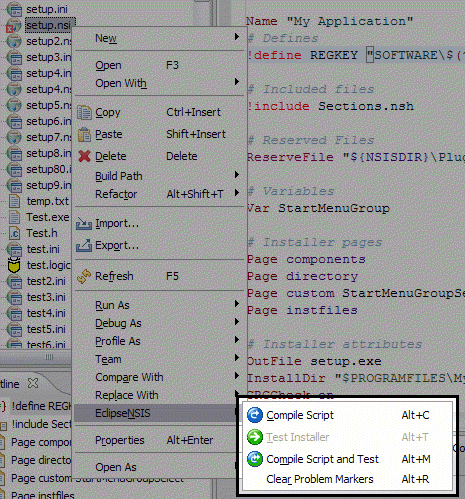
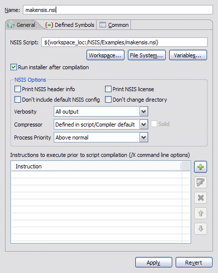
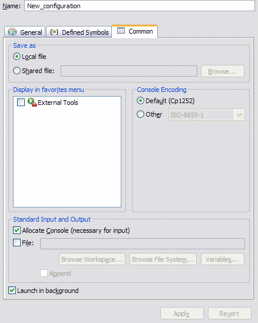

Compiling & Testing
EclipseNSIS includes integrated support for compiling NSIS scripts as well as for testing the installers created after compilation. Errors and warnings encountered during compilation are logged in the EclipseNSIS console and markers are added to the NSIS script file indicating the nature and location of these errors and warnings. These markers can be viewed either as annotations in the EclipseNSIS editor vertical and overview rulers or as line items in the Eclipse Workbench Problems view. EclipseNSIS persistently remembers script compilation and installer status, i.e., the status is remembered even between Eclipse Workbench sessions.
EclipseNSIS provides two options for compiling and testing NSIS scripts:
Direct Compile and Test
There are two ways to directly compile/or and test an NSIS script in EclipseNSIS:
- Using the Compile Script or Compile Script and Test menu items or buttons in the EclipseNSIS editor menu or toolbar, respectively.
- Right clicking on an NSIS script in any view that shows a list of Workspace resources (e.g., resource navigator, JDT package explorer, etc.) and selecting the EclipseNSIS menu.

If an NSIS script is successfully compiled in EclipseNSIS, i.e., there are no errors encountered during compilation, the installer file generated can be tested using the Test Installer menu item or toolbar button. This menu item will stay enabled as long as:
- The NSIS script is not modified after the installer was generated.
- The installer still exists on the filesystem.
- The installer is not altered manually after successful script compilation.
Run Configurations
In addition to direct compiling and testing, EclipseNSIS allows creation of run configurations. A run configuration is used to store a set of NSIS options for compiling a specific NSIS script. These options override any options set in the EclipseNSIS preferences or properties dialogs. Thus, multiple NSIS option sets can be stored for a script in the form of run configurations. Launching a run configuration compiles the associated NSIS script and optionally runs the generated installer executable. Run configurations can be launched at any time using the Eclipse Run menu or toolbar button.
Creating a Run Configuration
The quick way to create a run configuration is to right-click either in the EclipseNSIS editor or on an NSIS script file in in any view that shows a list of Workspace resources (e.g., resource navigator, JDT package explorer, etc.) and choosing the Run As→NSIS Script menu item. This automatically creates a run configuration for the selected NSIS script with default options and executes the run configuration.
A run configuration can also be created or updated using the Eclipse Launch Configuration dialog. The launch configuration dialog can be accessed by using the Eclipse Run→Run... menu item. A new NSIS Script run configuration can then be created by selecting the NSIS Script configuration type and clicking the New... button. This will create a new configuration with default options.
An NSIS Script run configuration provides two main tabs for customization:
NSIS
The NSIS tab is used to specify NSIS options for compiling the associated NSIS script. The major portion of the NSIS tab is identical in behavior to the EclipseNSIS Preferences Page.

- NSIS Script
- Specify the NSIS script associated with this run configuration. The NSIS script may be specified by browsing the workspace or the filesystem or by specifying a combination of Eclipse variables.
- Run Installer after Compilation
- Selecting this option will run the generated installer executable if the NSIS script compiles without any errors.
Common
The common tab manages the saving of the run configuration as well as collecting common preferences.

- Save As
- Specify save location of run configuration. By default it is stored internally by Eclipse in the Debug plugin metadata area. Alternately, a shared location can be chosen where the run configuration will be stored as a .launch file. This is useful in cases where the run configuration needs to be shared with other users or checked into a source code repository.
- Display in Favorites Menu
- Selecting this option will display the current configuration in the Run favorites menu.
- Console Encoding
- By default console output is shown using the default encoding (charset) for the platform. This setting can be used to specify an alternate encoding for the output of this run configuration.
- Standard Input and Output
- Specify how any output is captured, when generated by launching the run configuration. The output can be captured by the EclipseNSIS console or by an output file. Please note that the EclipseNSIS console does NOT accept input.
- Launch in Background
- Specify whether the run configuration will be launched in the foreground or background (default).
Previous | Contents | Next
Copyright © 2004, 2005 Sunil Kamath (IcemanK).